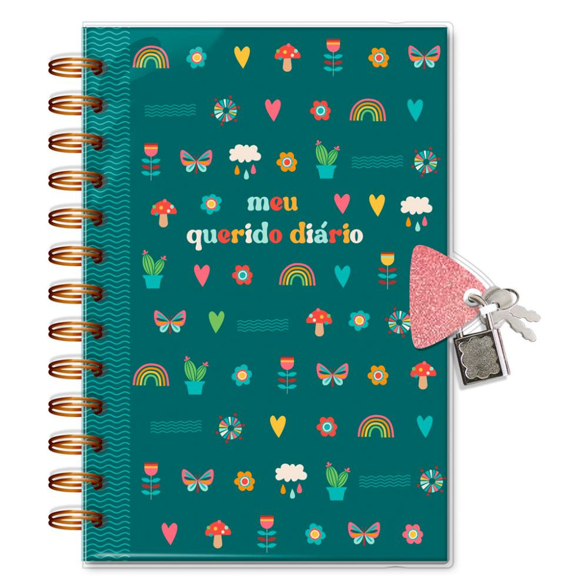

O BLOG B.S é como se fosse o meu diario, meu refugio,como nao tem meu nome vou poder me abrir com vecês e alguns podem se indentificar, pois como minh mãe diz, nenhuma experiencia é unica nao é mesmo. vou postar todo dia sobre algum acontecimento da minha vida! Você vai se sentir em uma conversa com suas amigas!

Quando entrei na Federal, fiquei meio insegura, pois só conhecia uma pessoa. mas depois virei amiga da sala toda! E eu amo essa sala
minha primeira aula do tecnico foi com a professora Drica, no começo nao entendi nada, mas com o decorrer das aulas eu entendi e amei!.
Resolvi fazer um bolo surpresa para minha mãe enquanto ela estava trabalhando. Confundi sal com açúcar e a primeira mordida fez todo mundo parar de mastigar.